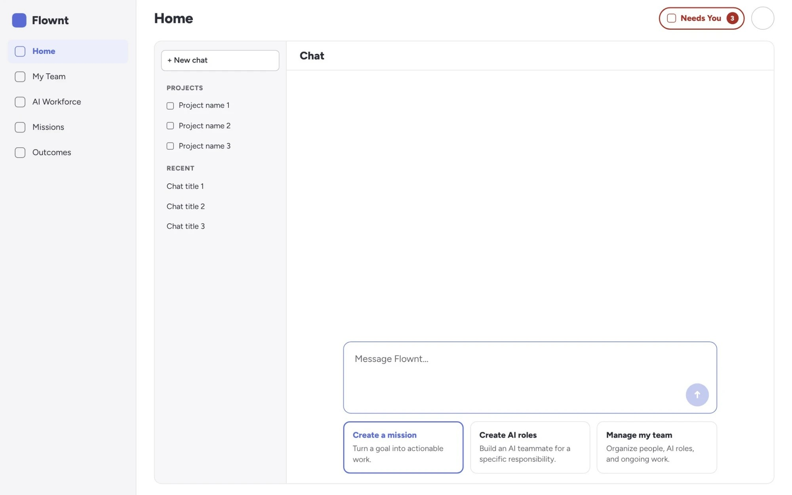
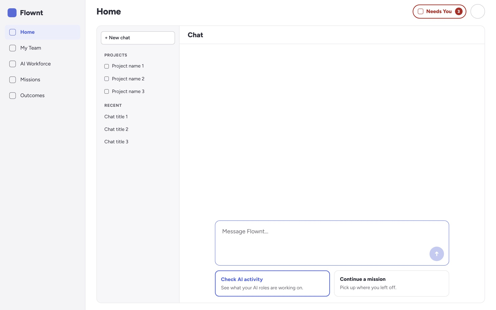

I considered that the Organizational Owner could be a business owner, Scrum Master, or Team Manager, who either takes on the role themselves or assigns someone to manage the organization. I focused on helping them create teams, manage people and access, understand AI role responsibilities, and monitor organization-wide AI activity.
Design intent: Help the person responsible shape the organization while keeping day-to-day work distributed across teams.
Team Members
A Team Member needs a more focused view of their work and the people and AI roles they collaborate with.
Their experience includes their team, read-only teammate profiles, AI role activity, and requests that need human input. The intention is to help them understand what is happening and where they need to contribute, without exposing administrative controls they may not need.
Design intent: Make participation and accountability clear without overwhelming the member with organization-wide management.
Basic Workflow
Organizational Owner
Sign in
Home
My Team
View team and people
Manage access / Add people / Create team
AI Workforce
View AI role details / Create AI role
AI Role Activity
Team Member
Sign in
Home
My Team
View team members
View teammate profile
AI Role Activity
Review activity / Respond to requests
AI Workforce
Login Page
I included a basic login screen to establish an entry point into the platform. The authentication flow can be explored further as the product requirements become clearer.
Home Screen
Organizational Owner

Team Member

Users can interact with Flownt through natural conversation or navigate the interface manually. The AI agent gathers the details it needs through follow-up questions before carrying out actions, such as creating a team or an AI role.